knitr::include_graphics("Screenshots/Screenshot1.png")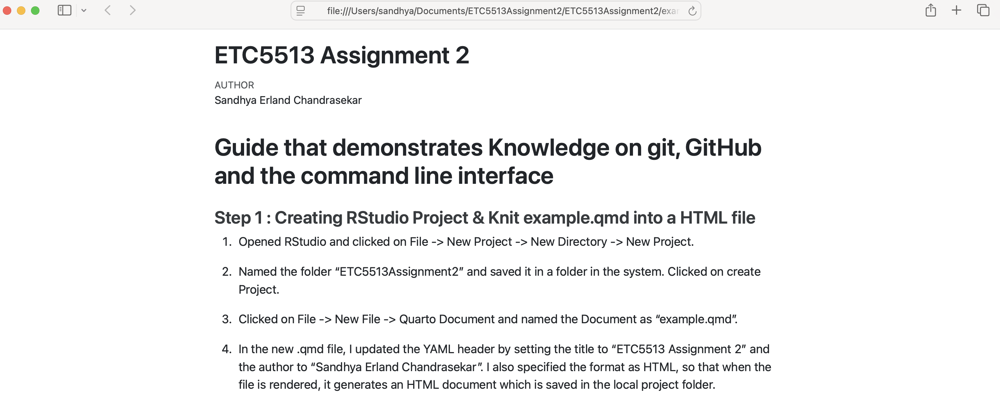
Opened RStudio and clicked on File -> New Project -> New Directory -> New Project.
Named the folder “ETC5513Assignment2” and saved it in a folder in the system. Clicked on create Project.
Clicked on File -> New File -> Quarto Document and named the Document as “example.qmd”.
In the new .qmd file, I updated the YAML header by setting the title to “ETC5513 Assignment 2” and the author to “Sandhya Erland Chandrasekar”. I also specified the format as HTML, so that when the file is rendered, it generates an HTML document which is saved in the local project folder.
The result for the knitted file is provided via a screenshot.
knitr::include_graphics("Screenshots/Screenshot1.png")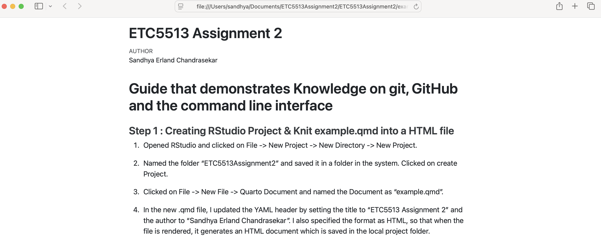
knitr::include_graphics("Screenshots/Screenshot2.png")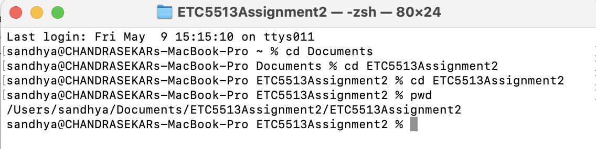
I initialized a Git repository in the current directory with git init. This created a hidden .git folder, enabling Git to track changes and manage version control.
To avoid tracking unnecessary files like .Rproj.user/, I created a .gitignore file and added .Rproj.user/ to it. I verified it with git status, ensuring it no longer appeared as untracked.
I staged all files using git add . and committed them with git commit -m “Initial push”.
On GitHub, I created a new repository (without README, .gitignore, or license), then copied its SSH URL.
I used git branch to view the current branch and git log –oneline for a concise commit history.
I linked the local repo to GitHub using: git remote add origin git@github.com:serl0001/ETC5513Assignment2.git
Finally, I pushed the project with: git push -u origin master This uploaded all local files to the GitHub repository.
I Opened my terminal and ran the command : “git switch -c testbranch” . This creates a new branch called testbranch and switches to it.
In the example.qmd in RStudio I add a few changes and save the document.
Then I add and commit the modified files using the commands: “git add example.qmd git commit -m ‘Add new section to example.qmd on testbranch’”
Then I Push the testbranch to the remote GitHub repository using the command : “git push -u origin testbranch” . The testbranch and its changes are now on GitHub.
This can be confirmed by visiting my GitHub repo and checking under the “branches” dropdown.
knitr::include_graphics("Screenshots/Screenshot3.png")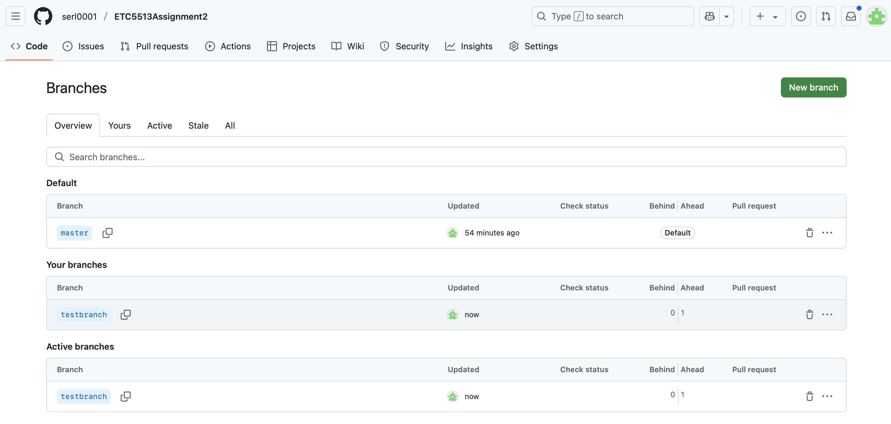
Created a Data folder in my system and added the Data file from Assignment 1 to that folder. The csv file is called “child-mortality.csv”
Staged the new folder and contents using the command: git add Data
Pushed the amended commit to GitHub Because I rewrote the last commit, I need to force push : git push –force
knitr::include_graphics("Screenshots/Screenshot4.png")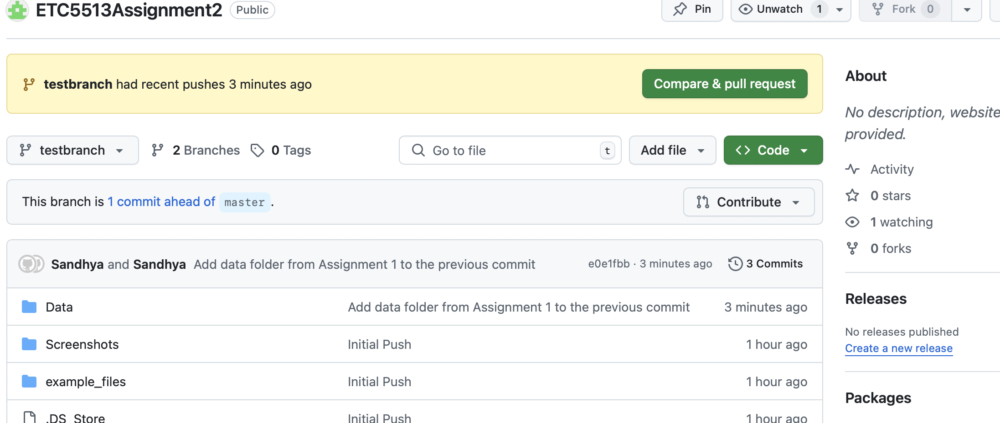
Switched back to the master branch using the command : “git switch master”. Which switches to the master branch and the changes made int the test branch are not visible
Modified example.qmd in a conflicting way . Now, in main, I edited the same part of example.qmd (e.g., the same section heading) to something different and saved the qmd file.
Now I add and commit and push the changes to the remote repository via the terminal : git add . git commit -m “Modify example.qmd in a conflicting way on main branch” git push origin master
I’ve now created a conflict scenario by editing the same part of example.qmd on both main and testbranch.
knitr::include_graphics("Screenshots/Screenshot5.png")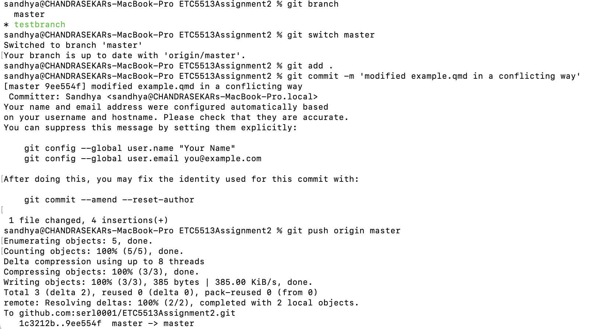
knitr::include_graphics("Screenshots/Screenshot6.png")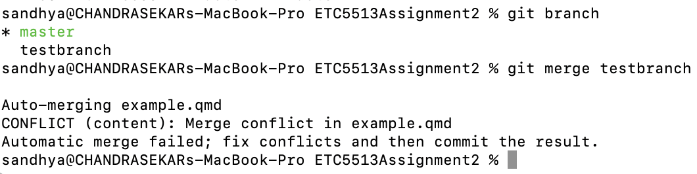
Git has found a merge conflict in example.qmd.
knitr::include_graphics("Screenshots/Screenshot7.png")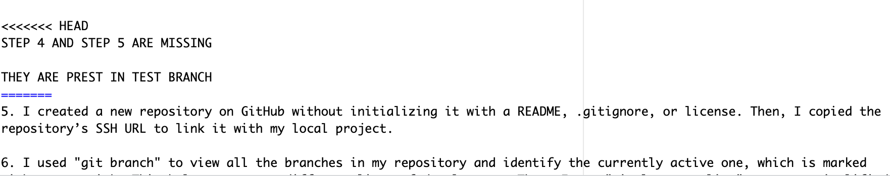
I then fixed the conflicts bu removing the marked lines and conflict marker.
And then I add , Commit and Push it to the master branch.
I verified I was on the master branch using the command: git branch The current branch is marked with an asterisk (*), confirming I was on master.
I created an annotated tag with: git tag -a v1.0 -m “First stable version after merging testbranch” This tag includes a custom message and stores metadata like my name, email, and the date, marking a stable point in the commit history.
I then pushed the tag to GitHub using: git push origin v1.0 This makes the v1.0 tag available in the remote repository for reference or releases.
knitr::include_graphics("Screenshots/Screenshot8.png")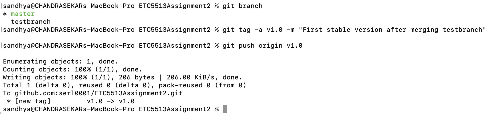
knitr::include_graphics("Screenshots/Screenshot9.png")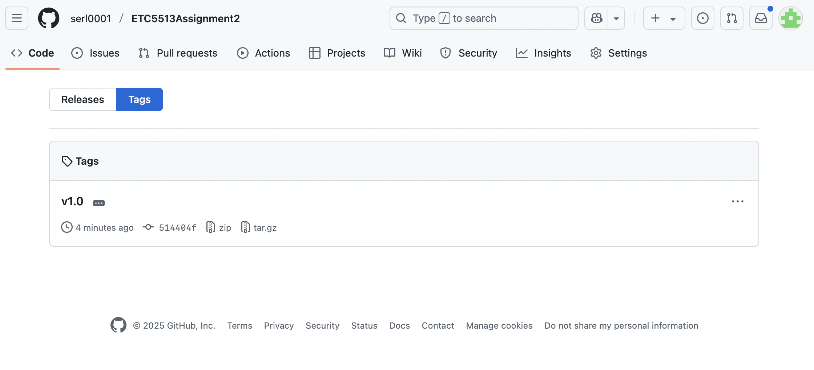
knitr::include_graphics("Screenshots/Screenshot10.png")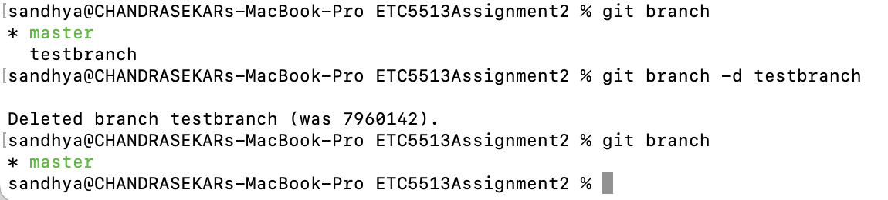
knitr::include_graphics("Screenshots/Screenshot11.png")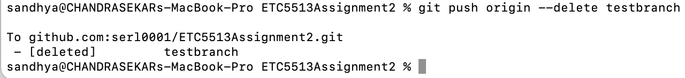
knitr::include_graphics("Screenshots/Screenshot12.png")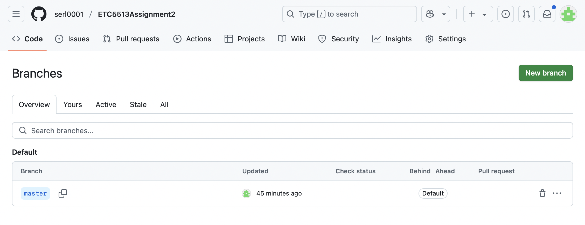
Which shows:
–oneline: Each commit appears as a single line
–graph: Visualizes branch and merge structure
–decorate: Shows branch names and tags
–all: Includes all branches, not just the current one
knitr::include_graphics("Screenshots/Screenshot13.png")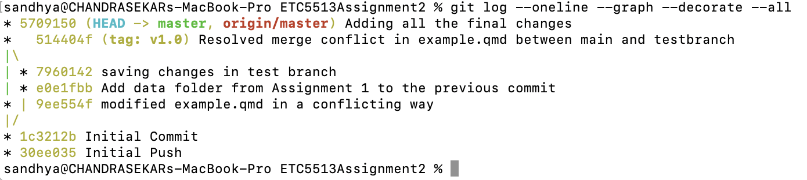
1.Made a Change in example.qmd and added this new section :
plot(mtcars)
knitr::include_graphics("Screenshots/Screenshot14.png")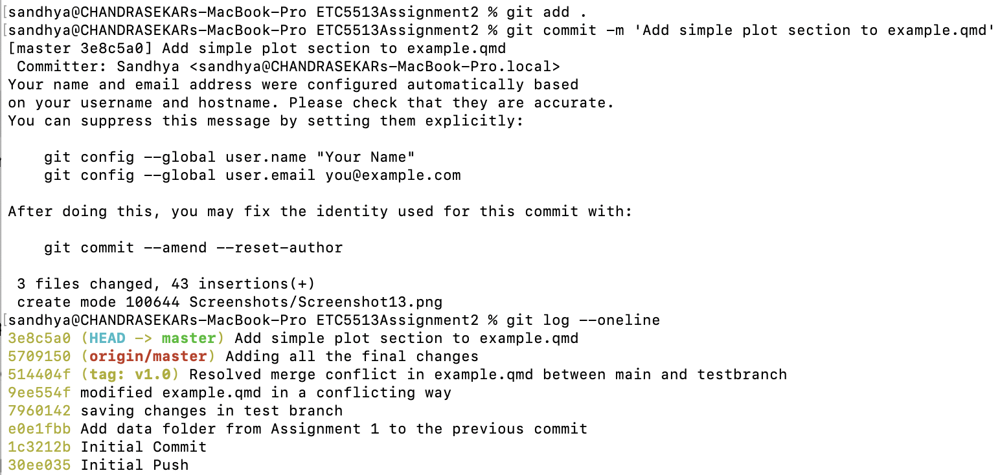
Undo the last commit
Leaves your changes staged (still tracked and not lost)
knitr::include_graphics("Screenshots/Screenshot15.png")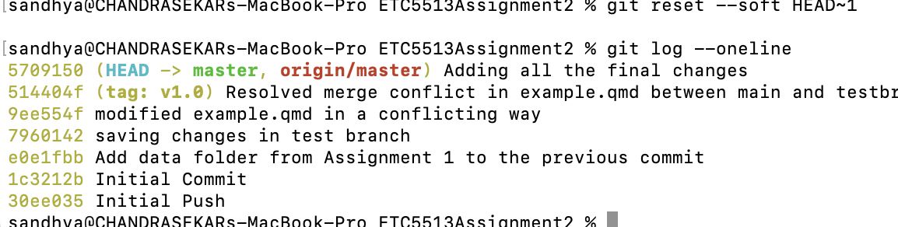